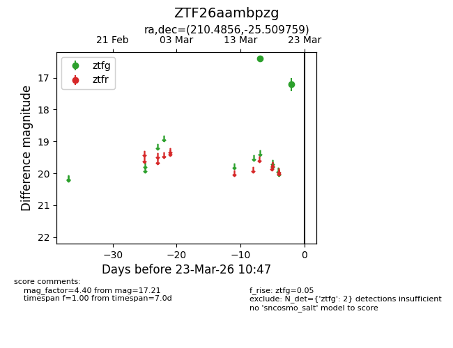
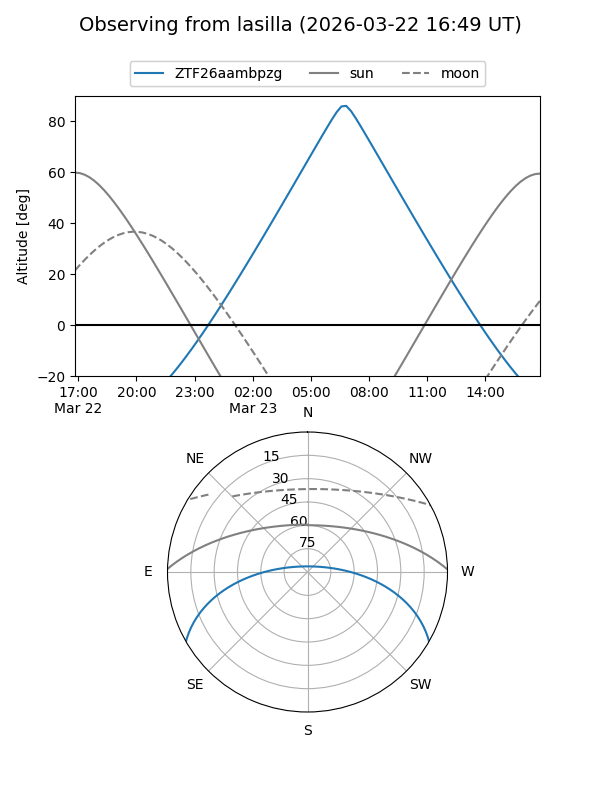
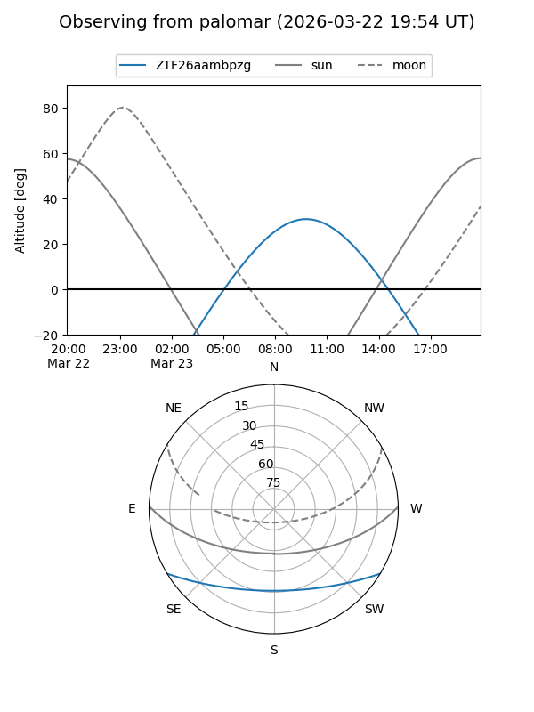

ZTF26aambpzg
Target ZTF26aambpzg at 2026-03-23 10:49
Aliases and brokers:
FINK: link
Lasair: link
ALeRCE: link
alt names
ZTF26aambpzg (ztf,fink_ztf)
Coordinates:
equatorial (ra, dec) = 210.4856,-25.50976
equatorial (HMS+DMS) = 14:01:56.55,-25:30:35.13
galactic (l, b) = (322.3444,+34.69023)
Flags:
Photometry:
last ztfg=17.21
2 ztfg detections
Lightcurve

Visibility


Additional plots